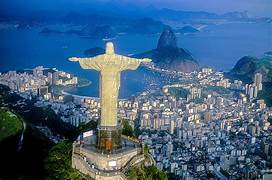
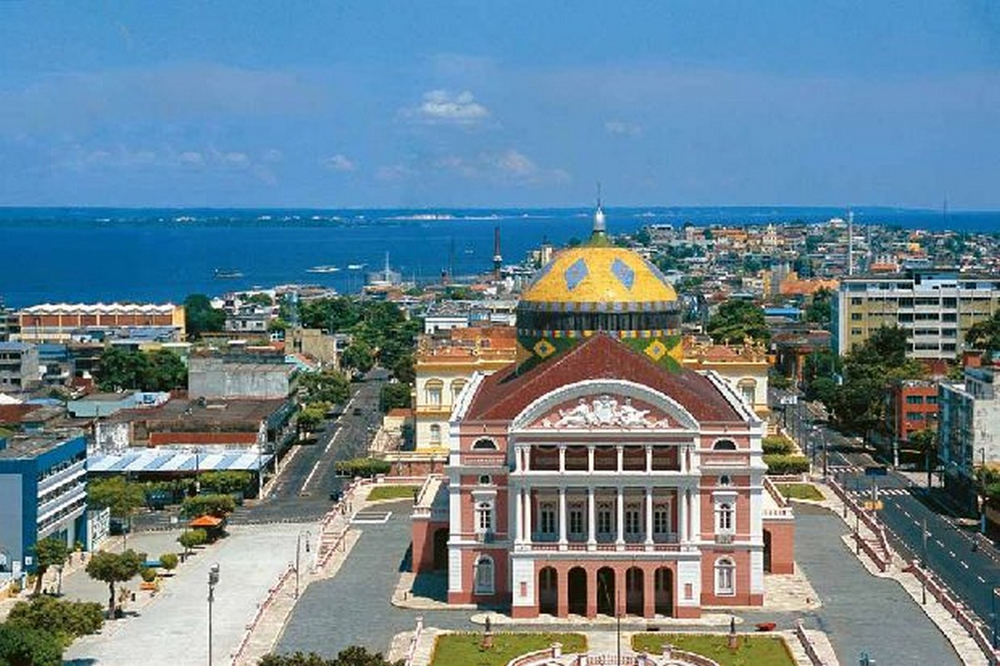
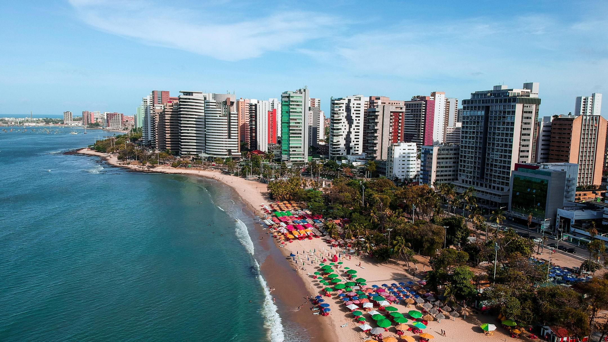

| Destino | Tempo de Voo | Melhor Época | Pontos Turisticos |
|---|---|---|---|
| Rio de Janeiro | 1h 30m | Dezembro a Março | Cristo Redentor, Pão de Açúcar, Copacabana |
| Manaus | 4h | Junho a Setembro | Teatro Amazonas, Encontro das Águas, Museu do Seringal |
| Salvador | 2h | Dezembro a Fevereiro | Pelourinho, Elevador Lacerda, Igreja do Bonfim |
| Recife | 2h 30m | Setembro a Março | Praia de Boa Viagem, Olinda, Instituto Ricardo Brennand |
| Fortaleza | 3h | Julho a Dezembro | Praia do Futuro, Canoa Quebrada, Mercado Central |
Rio de Janeiro
Conhecida por suas paisagens deslumbrantes e praias icônicas.
Manaus

Conhecida como a "Veneza Brasileira" por seus rios e pontes.
Salvador
Famosa por suas belas praias, como a Praia do Futuro, e sua vida noturna animada.
Recife

Porta de entrada para a Amazônia, com atrações como o Teatro Amazonas.
Fortaleza
Destaca-se por sua herança afro-brasileira, com o histórico Pelourinho.